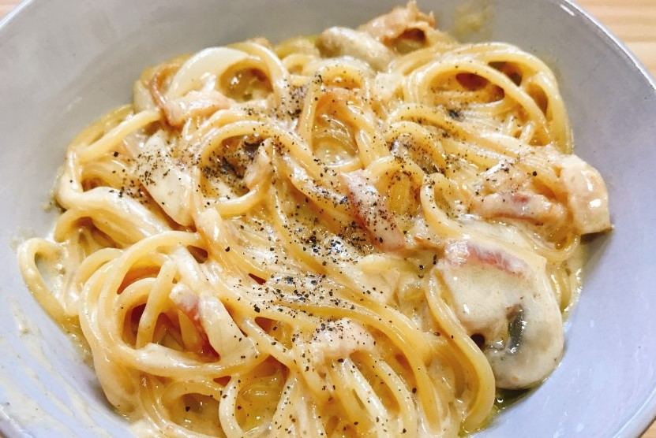

Supplies 150g meat spaghetti sauce, 1 person pasta, 1 handful mozzarella cheese, 1/2T olive oil, 200g pork meat, 1/2T minced garlic, 1T matte wine, a little salt, pepper
The process if making
Bring water to a boil in a pot. Prepare one serving of pasta. Pick up a circle, about the size of a coin.
When the pot water starts to boil, add pasta noodles and boil for 10 minutes.
Put all the boiled pasta noodles in a bowl and mix them with a little olive oil.
* Olive oil plays a role in preventing pasta noodles from swelling.
Put the meat in a frying pan and stir-fry it with a little minced garlic, cooking wine, salt, and pepper.
* In addition to meat spaghetti, pork meat is good to eat in addition to various dishes such as fried rice and bibimbap, so make a lot at once, store it in a refrigerator, and take it out whenever necessary.
Put a lot of meat on the boiled pasta noodles.
Put the meat spaghetti sauce on top.
Put a handful of mozzarella cheese on top of it!
Now put it in the microwave and melt the cheese for 3 minutes to complete the meat spaghetti dish.
* Cook with a microwave lid.
Use chopsticks or forks to mix noodles and cheese well!
Cream Sauce Pastaü§çüçù
Supplies 150g meat spaghetti sauce, 1 person pasta, 1 handful mozzarella cheese, 1/2T olive oil, 200g pork meat, 1/2T minced garlic, 1T matte wine, a little salt, pepper
The process if making
First, cut the bacon into bite-sized pieces. Wash and cut the button mushrooms,too.
I'll make a cream pasta about the size of a 100-won coin. Even if it looks small, the amount will be perfect if the noodles are cooked and cream sauce is added.
Add a little salt to boiling water and bring to a boil.
Spread out the pasta dry noodles evenly.
Put the noodles in boiling water with chopsticks and cook for about 5 minutes. When you cook the noodles in boiling water
You can shorten the time when you stir-fry it with cream sauce later.
Transfer the pasta noodles cooked in boiling water for about 5 minutes to a strainer. At this time! Don't rinse in cold water, just cool the pasta noodles as it is.
Now I'm going to make the cream pasta sauce! Put just enough olive oil in a heated frying pan, add the minced garlic, and stir-fry.
Add the butter when the minced garlic is cooked to a certain extent. And when the butter has melted, add the button mushrooms and stir-fry.
Once the button mushrooms is well-cooked, add the shredded onions and bacon.
Add 180ml of white milk and boil it!
Add two pieces of cheddar cheese to make the cream pasta sauce thick. If the sauce is bland, add the salt little.
Add pasta noodles that were resting in the strainer.
Mix the pasta noodles and cream sauce well.
Sprinkle pepper on the finished cream pasta and you're done.

Tomato Sauce pastaüçÖüçù
Supplies 1 bottle of tomato sauce (1 bottle 455g), 2.5 servings of spaghetti noodles, 15 jujube cherry tomatoes, 6 button mushroomss, 100g of bacon, parsley powder, a little olive oil, shredded onion
The process if making
The fresh jujube-drop tomatoes don't peel because they don't peel, but just cut them in whole.
Slice the mushrooms into sides, and soak the bacon in hot water for a while to remove the fat, then support it with a sieve to drain.
When the water boils, add olive oil and salt to boil the spaghetti noodles properly.
While the noodles are boiled on one side, bake the bacon in a pan covered with olive oil until golden, then add the button mushrooms and stir-fry it sweetly.
Add the commercial tomato sauce and chopped jujube drop tomatoes and boil them so that they blend together.When the sauce boils, add the boiled spaghetti noodles and stir-fry them evenly.
Place in a bowl and sprinkle lightly with parsley powder. Then, it's done